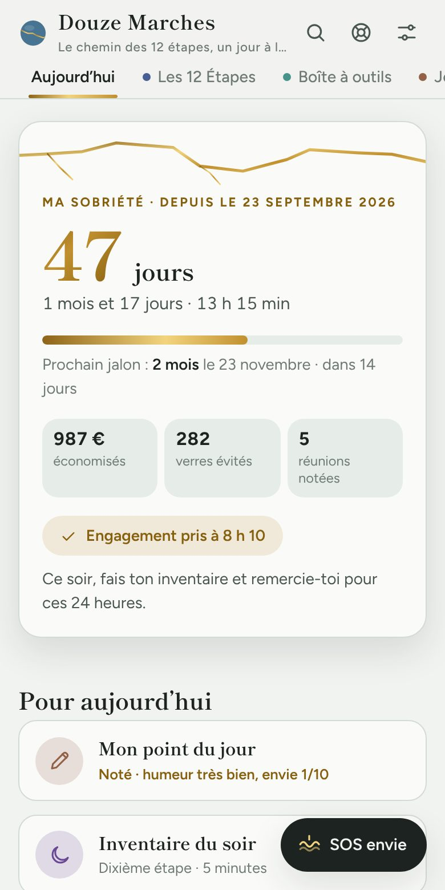
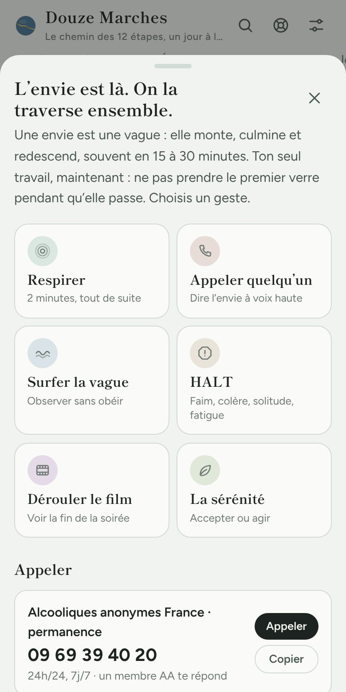
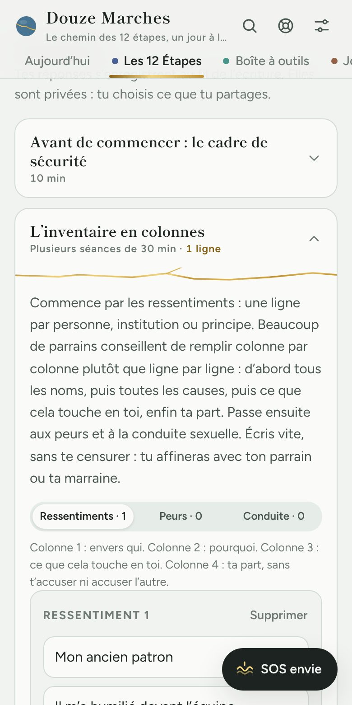
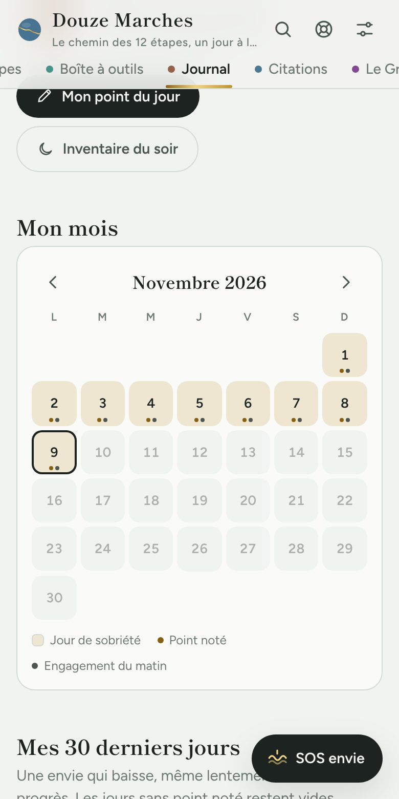

Application indépendante · en français
Les 12 étapes dans ta poche, un jour à la fois.
Un compteur de sobriété, un bouton SOS quand l’envie monte, les Douze Étapes expliquées avec 64 exercices et un journal privé. Pour avancer entre deux réunions, à ton rythme.
30 minutes d’essai complet, gratuit et sans carte. Ensuite, 5 € une seule fois. Le SOS reste toujours gratuit.

Quand l’envie arrive
Un bouton pour traverser la vague
Une envie monte, culmine et redescend, souvent en moins d’une demi-heure. Le bouton SOS t’aide à ne pas prendre le premier verre pendant qu’elle passe.
- Respirer deux minutes, guidé, tout de suite.
- Appeler ton parrain ou ta marraine en un geste, ou la permanence des AA.
- Surfer la vague : 15 minutes pour observer l’envie sans lui obéir.
- Dérouler le film jusqu’au lendemain matin, et relire tes raisons d’arrêter.

Le programme
Les Douze Étapes, enfin concrètes
Pour chaque étape : le texte, une explication claire, ce qu’en dit le Gros Livre, ce qu’elle n’est pas, et des exercices écrits à relire avec ton parrain ou ta marraine. L’inventaire en colonnes, la liste des réparations et l’inventaire du soir sont guidés pas à pas.
- Étape 1Admettre
- Étape 2Espérer
- Étape 3Décider
- Étape 4L’inventaire
- Étape 5Se confier
- Étape 6Consentir
- Étape 7Demander
- Étape 8Dresser la liste
- Étape 9Réparer
- Étape 10Persévérer
- Étape 11Méditer
- Étape 12Transmettre

Ton journal
Chaque jour compte, et tu le vois
Le calendrier se dore à chaque jour de sobriété. Chaque jalon, de 24 heures à 2 ans, remplit d’or une fêlure de ton bol, comme dans l’art japonais du kintsugi.
- Le point du jour en une minute : humeur, envie de boire, trois gratitudes.
- Tes courbes sur 30 jours : voir l’envie baisser, même lentement.
- L’engagement du matin : « Je ne bois pas aujourd’hui », pour 24 heures.

Et aussi
Tout ce qu’il faut pour le chemin
790 citations expliquées
Membres des fraternités, soignants, écrivains, sagesses anciennes : chacune avec son analyse et une piste pour aujourd’hui.
Guide d’étude du Gros Livre
Chaque partie résumée, avec une fiche d’étude, ses questions et un plan de lecture en 30 jours.
Réunions et parrainage
Ta première réunion pas à pas, trouver un groupe, choisir un parrain, les Douze Traditions.
Plan anti-rechute
Tes raisons, tes déclencheurs, tes signaux d’alerte et tes contacts, prêts au moment de l’envie.
Lettre de rupture
Dire adieu à l’alcool par écrit, et la balance décisionnelle pour les jours de doute.
60 réflexions quotidiennes
Chaque matin, un texte pour le chemin, une question et un petit geste pour la journée.
Un prix simple
Essaie tout. Garde-le pour 5 €.
Essai complet
0 €30 minutes
- Toute l’application ouverte
- Sans carte, sans compte
- Sans engagement
Accès premium
5 €une seule fois
- Les 12 étapes et leurs 64 exercices
- 60 réflexions quotidiennes
- Journal complet, 790 citations, guide d’étude
- À vie, sans abonnement
- PayPal ou carte bancaire
Toujours gratuit
0 €pour toujours
- Le compteur et les jalons
- Le bouton SOS et les numéros d’aide
- Les étapes 1 à 3 et les réunions
Ton journal ne quitte pas ton téléphone
Pas de compte, pas de publicité, pas de revente de données. Ce que tu écris reste sur ton appareil, et personne d’autre ne peut le lire, pas même nous.
Installation gratuite
Sur ton écran d’accueil en 30 secondes
Sur iPhone
- Ouvre le lien de l’application dans Safari.
- Touche le bouton Partager, en bas de l’écran.
- Choisis « Sur l’écran d’accueil », puis Ajouter.
Sur Android
- Ouvre le lien de l’application dans Chrome.
- Touche Installer dans l’application, ou le menu ⋮ puis « Installer l’application ».
- Confirme : l’icône apparaît sur ton écran d’accueil.
L’application s’ouvre ensuite en plein écran, comme une application classique, et fonctionne même sans réseau.
Questions
Ce qu’on nous demande
Est-ce une application des Alcooliques anonymes ?
Non. Douze Marches est une application indépendante, ni affiliée ni approuvée par les AA. Elle accompagne le chemin des Douze Étapes et t’encourage à aller en réunion : les réunions des AA sont gratuites et ouvertes à tous, sur alcooliques-anonymes.fr.
Est-ce que ça remplace les réunions ou un médecin ?
Non. L’application t’aide entre deux réunions et entre deux rendez-vous. Si tu bois beaucoup et tous les jours, ne t’arrête pas seul brutalement : parles-en à un médecin, le sevrage peut être dangereux.
Que se passe-t-il après les 30 minutes d’essai ?
Le contenu premium se verrouille et tu peux le débloquer pour 5 €, une seule fois. Le compteur, le bouton SOS, les numéros d’aide, les étapes 1 à 3 et les réunions restent gratuits. Tes notes restent sur ton téléphone.
Je ne crois pas en Dieu. C’est pour moi ?
Oui. L’application parle d’une Puissance supérieure telle que chacun la conçoit : le groupe, tes valeurs, la vie elle-même. Les prières sont proposées avec une version sans Dieu.
Je n’ai pas encore arrêté de boire.
Tu es le bienvenu. Aux AA, la seule condition est le désir d’arrêter. Le test de l’OMS et la fiche sur le sevrage t’aident à faire le point, et le compteur démarre quand tu es prêt.
Et si je change de téléphone ?
Dans les réglages, « Copier ma sauvegarde » garde tout ton contenu, accès premium compris. Sur le nouveau téléphone, « Restaurer » remet tout en place.
J’ai un problème avec mon paiement.
Écris à Pierre.Rnrd04@gmail.com avec ton numéro de transaction PayPal : on te répond rapidement.